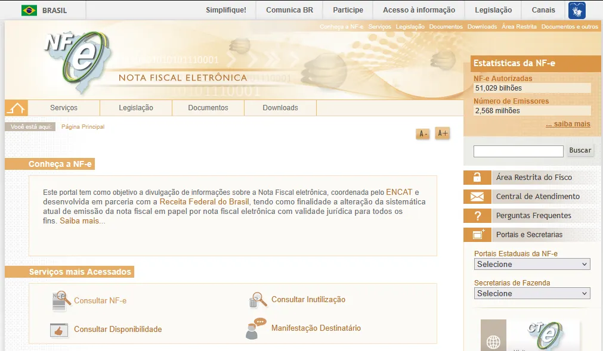

1. Cosultar Nota Fiscal
-
Acesse o portal de nota fiscal eletrônico da Receita Federal
- Pesquise no Google: portal da nota fiscal.
- Acesse o link: Portal da NF-e

Este artigo explica como dar entrada corretamente em um Nota Fiscal de compra simples